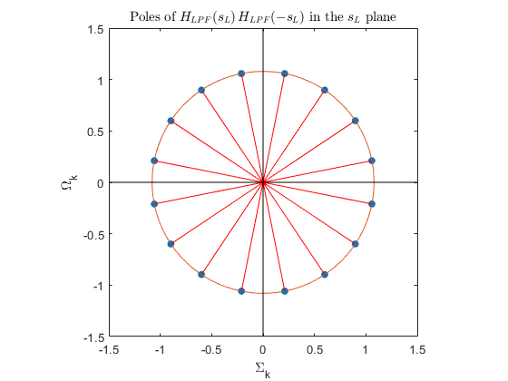
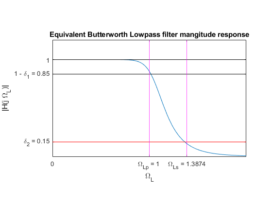
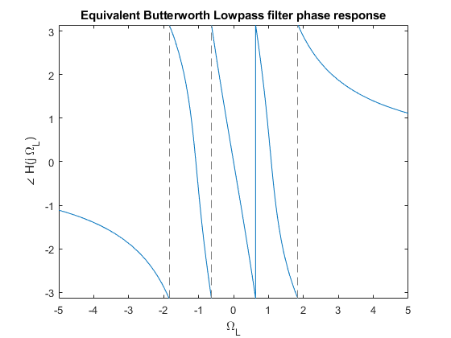
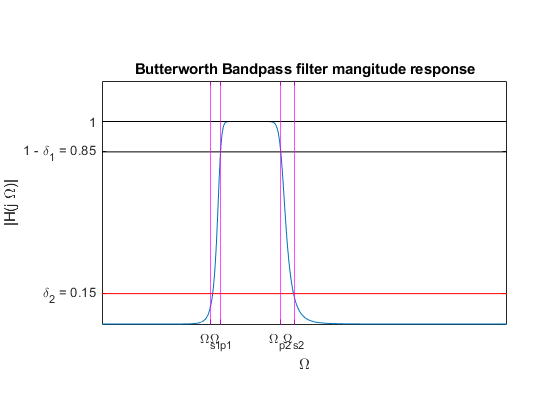
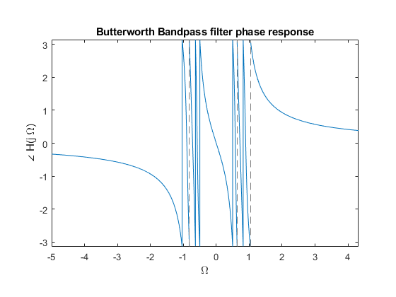
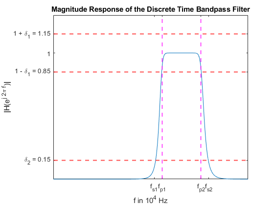
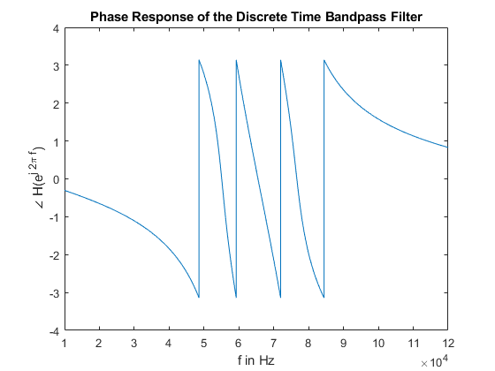

Contents
clc; clear all; close all;
tic;
Poles of H_{analog}(s_L) H_{analog}(-s_L)
N = 8;
Omega_c = 1.0788;
k = 1:2*N;
poles = Omega_c .* exp(1i .* (pi/2) .* (1 + (2.*k + 1)./ N));
figure();
plot(poles, '.', 'MarkerSize', 20);
xlim([-1.5 1.5]);
ylim([-1.5 1.5]);
daspect([1 1 1]);
hold on;
x = linspace(-pi, pi, 10000);
a = Omega_c .* cos(x);
b = Omega_c .* sin(x);
plot(a,b);
hold on;
plot(0,0,'r*');
left_plane_poles = [];
for i=1:size(poles,2)
hold on;
plot([0, real(poles(1,i))], [0, imag(poles(1,i))], 'r-');
if real(poles(1,i)) < 0
left_plane_poles = [left_plane_poles, poles(1,i)];
end
end
plot([0, 0],[-1.5, 1.5], 'k-');
plot([-1.5, 1.5],[0, 0], 'k-');
title('Poles of $H_{LPF}(s_L) \, H_{LPF}(-s_L)$ in the $s_L$ plane', 'Interpreter', 'latex');
xlabel('\Sigma_k');
ylabel('\Omega_k');

Finding poles of H_{analog}(s_L)
syms s x;
f = 1;
for i=1:size(left_plane_poles,2)
f = f * (s - left_plane_poles(1,i));
end
Magnitude and Phase response of H_{analog}(s_L)
g = subs(f, s, 1i * x);
figure();
fplot(abs(1.8345/g));
hold on;
fplot(s - s - 0.15 + 1, 'k-', 'Markersize', 10);
hold on;
fplot(x-x+1, 'k-', 'Markersize', 10);
hold on;
fplot(x - x + 0.15, 'r-', 'Markersize', 10);
xline(1, 'magenta-');
hold on;
xline(1.3874,'magenta-');
axis([0 2 0 1.2]);
set(gca, 'XTick', [0, 1, 1.3874], 'xticklabel', {'0', '\Omega_{Lp} = 1','\Omega_{Ls} = 1.3874'});
set(gca, 'YTick', [0.15, 0.85, 1], 'yticklabel', {'\delta_2 = 0.15', '1 - \delta_1 = 0.85', '1'});
daspect([1 1 1]);
title('Equivalent Butterworth Lowpass filter mangitude response');
xlabel('\Omega_L');
ylabel('|H(j \Omega_L)|');
figure();
fplot(angle(1.8345/g));
xlabel('\Omega_L');
ylabel('\angle H(j \Omega_L)');
title('Equivalent Butterworth Lowpass filter phase response');
 
Bandpass analog frequency transformation
syms s1;
Omega_0 = 0.7189;
B = 0.2924;
s1 = (s^2 + Omega_0^2) ./ (B * s);
h = subs(f, s, s1);
a = vpa(1.8345/h, 5);
b = subs(a, s, 1i * x);
figure();
fplot(abs(b));
set(gca, 'XTick', [0.5375, 0.5875, 0.8799, 0.9498], 'xticklabel', {'\Omega_{s1}', '\Omega_{p1}', '\Omega_{p2}', '\Omega_{s2}'});
set(gca, 'YTick', [0.15, 0.85, 1], 'yticklabel', {'\delta_2 = 0.15', '1 - \delta_1 = 0.85', '1'});
hold on;
xline(0.5375, 'magenta-');hold on;
xline(0.5875, 'magenta-');hold on;
xline(0.8799, 'magenta-');hold on;
xline( 0.9498, 'magenta-');
hold on;
fplot(s - s - 0.15 + 1, 'k-', 'Markersize', 10);
hold on;
fplot(x-x+1, 'k-', 'Markersize', 10);
hold on;
fplot(x - x + 0.15, 'r-', 'Markersize', 10);
daspect([1 1 1]);
title('Butterworth Bandpass filter mangitude response');
xlabel('\Omega');
ylabel('|H(j \Omega)|');
axis([0 2 0 1.2]);
figure();
fplot(angle(b));
daspect([1 1 1]);
title('Butterworth Bandpass filter phase response');
xlabel('\Omega');
ylabel('\angle H(j \Omega)');
 
bilinear transformation
syms w;
c = subs(a, s, (1-1/w) / (1+1/w));
[Nz, Dz] = numden(1/c);
Nz = sym2poly(Nz);
Dz = sym2poly(Dz);
[H,f] = freqz(Dz,Nz,1024*1024, 330e3);
plot(f,abs(H));
axis([0 100e3 0 1.3]);
hold on;
yline(1.15, 'red--', 'LineWidth', 1.5);
hold on;
yline(0.85, 'red--', 'LineWidth', 1.5);
hold on;
yline(0.15, 'red--', 'LineWidth', 1.5);
hold on;
xline(55.8e3, 'magenta--', 'LineWidth', 1.5);
hold on;
xline(75.8e3, 'magenta--', 'LineWidth', 1.5);
xlabel('f in 10^4 Hz');
ylabel('|H(e^{j 2\pi f})|');
title('Magnitude Response of the Discrete Time Bandpass Filter');
set(gca, 'XTick', [51.8e3, 55.8e3, 75.8e3, 79.8e3], 'xticklabel', {'f_{s1}', 'f_{p1}', 'f_{p2}', 'f_{s2}'});
set(gca, 'YTick', [0.15, 0.85, 1, 1.15], 'yticklabel', {'\delta_2 = 0.15', '1 - \delta_1 = 0.85', '1', '1 + \delta_1 = 1.15'});

figure();
plot(f, angle(H));
xlim([1e4 120e3]);
ylabel('\angle H(e^{j 2\pi f})');
xlabel('f in Hz');
title('Phase Response of the Discrete Time Bandpass Filter');
